Araç İçi Kamera + Mobil NVR
PARS M13 Araç Kamerası
Ön cama monte edilen kompakt tek cihaz çözümü; entegre iç/dış kamera, mobil NVR, uzaktan izleme, araç takip ve güvenli kayıt işlevlerini profesyonel bir platformda birleştirir.
2 MP çift kamera
1080p görüntü
4G/LTE erişim
GPS & BeiDou
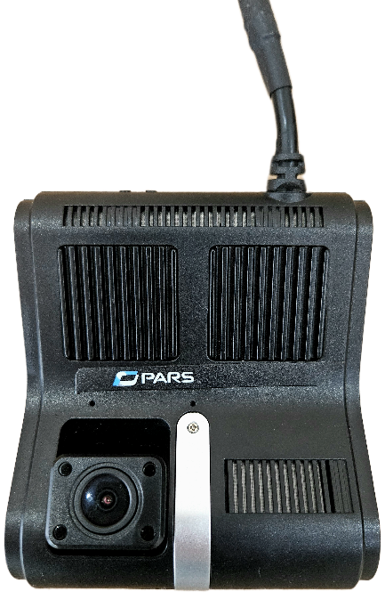
Mobil NVR
H.264/H.265 + HLS
Güvenli kayıt
Şifreli TF/SD depolama
Kompakt platform
Tek cihazda görüntü, kayıt, takip ve alarm yönetimi
PARS M13, araç içinde ekstra alan ihtiyacını azaltan ön cam montajlı bir yapı sunar. İç ve dış kamera görüntüleri aynı cihazda kayıt altına alınır; 4G/LTE bağlantı sayesinde kontrol merkezine görüntü, konum ve alarm bilgisi aktarılabilir.
Entegre çift kamera
İç ve dış kamera kanalları 2 MP çözünürlük ve 1080p görüntü kalitesiyle araç içi ve yol istikametini birlikte kapsar.
Mobil NVR kayıt
Döngüsel kayıt, dahili mikrofon, H.264/H.265 sıkıştırma ve HLS video akışıyla araçta sürekli kayıt altyapısı sağlar.
Uzaktan erişim
4G/LTE modülüyle uzaktan kayıt izleme/indirme, yazılım güncelleme, konum aktarımı ve alarm bildirimi desteklenir.
Araç takip
GPS/BeiDou desteğiyle gerçek zamanlı konum verileri kontrol merkezine belirlenen periyotta gönderilebilir.
Görüntü sistemi
OutsideCam ve InsideCam ile iki yönlü kapsama
Dış kamera, yol istikametinde yüksek dinamik aralıklı görüntülemeye ve LED Flicker Mitigation özelliğine odaklanır. İç kamera ise global shutter yapısıyla hareketli araç içi sahnelerde bozulma ve eğrilme etkisini azaltmaya yardımcı olur.
110°Minimum yatay görüş açısı
50°Minimum dikey görüş açısı
2 MPTüm kamera kanalları
PARS OutsideCam
Yol istikameti için WHDR, LFM ve geniş görüş açısı desteği.
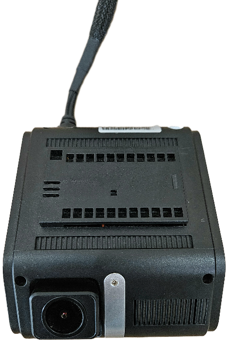
PARS InsideCam
Araç içi sahnelerde global shutter destekli görüntüleme.
Kayıt, bağlantı ve güvenlik
Veri bütünlüğü ve operasyon sürekliliği için tasarlandı
PARS M13; döngüsel kayıt, kontak sonrası parametrik kayıt, yetkisiz erişim tespiti, şifreli veri saklama ve acil durum etiketleme özellikleriyle filo operasyonlarında güvenilir kayıt yönetimi sunar.
Döngüsel ve sesli kayıt
Hafıza dolduğunda eski kayıtların üzerine yeni kayıt yazılır. Dahili mikrofonla ortam sesi kaydedilebilir.
Parametrik süre yönetimi
Kontak kapandıktan sonra kayıt süresi uzaktan ayarlanabilir; varsayılan süre 15 dakikadır.
Pre-alarm / post-alarm etiketleme
SOS durumunda alarmdan önceki 30 saniye ve sonraki 5 dakika kayıtlar alarm anı olarak işaretlenir.
Hologram + yazılımsal kontrol
SD kart ve SIM erişimi hologram/kırılgan etiketle izlenir; kayıtlar cihaz özelinde şifreli tutulur.
WHDR performansı
Parlak ışık kaynaklarında daha fazla kullanılabilir detay
WHDR testlerinde PARS araç kamerası, standart araç kamerasına göre daha az kırpılmış ve beyaza yakın piksel üretir. Tünel lambaları, far parlaması, trafik ışıkları, parlak tabelalar ve garaj çıkışı gibi zorlu sahnelerde çevre bağlamı daha dengeli korunur.
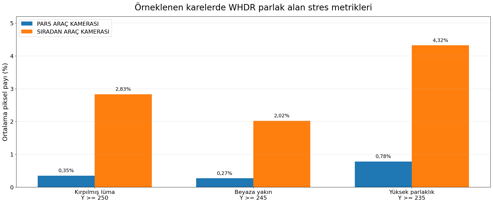
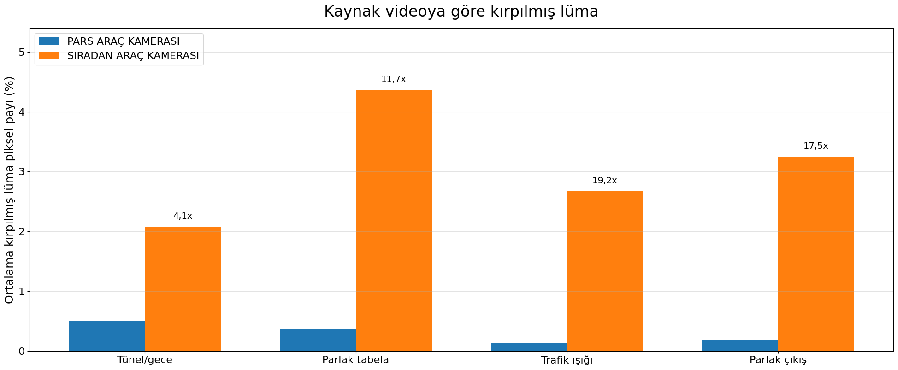
Kantitatif WHDR analizi
Parlak alanlarda kırpılma ve beyaza yaklaşma oranları.
| Metrik | PARS | Standart | Göreli sonuç |
|---|---|---|---|
| Kırpılmış lüma, Y ≥ 250 | 0,35% | 2,83% | Standart 8,0x daha yüksek |
| Beyaza yakın, Y ≥ 245 | 0,27% | 2,02% | Standart 7,6x daha yüksek |
| Yüksek parlaklık, Y ≥ 235 | 0,78% | 4,32% | Standart 5,6x daha yüksek |
| P99 lüma ortalaması | 188,4 | 243,3 | Standart sinyal aralığının tepesine daha sık yaklaşır |
| Gölge/detay temsil değeri | 64,3 | 42,3 | PARS genel temsil değerinde daha yüksek |
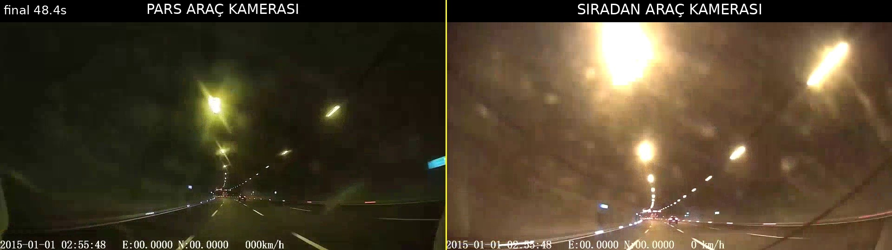
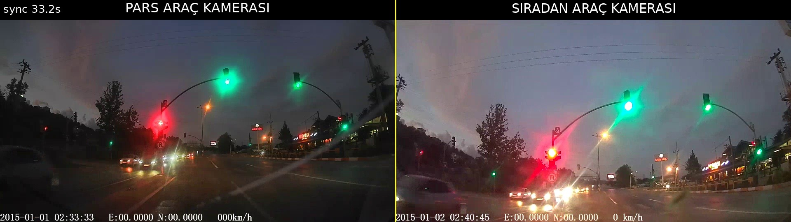
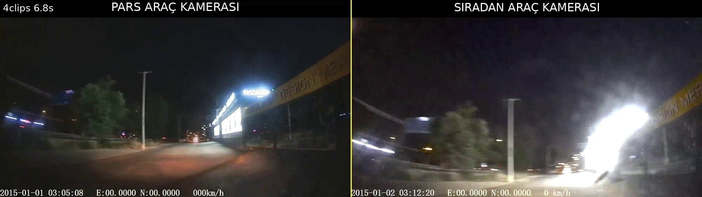
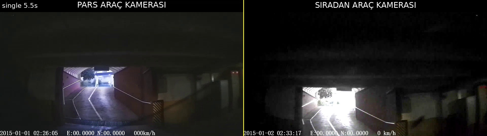
LFM performansı
PWM LED kaynaklarında görünürlük sürekliliği
PARS Araç Kamerası, test videolarında 25 Hz ve 50 Hz PWM kırmızı/yeşil LED koşullarının tamamında PWM LED’leri %0,0 kapalı çerçeveyle görünür tutmuştur. Standart kamera özellikle 25 Hz’de belirgin PWM aliasing ve LED kaybolması üretmiştir.
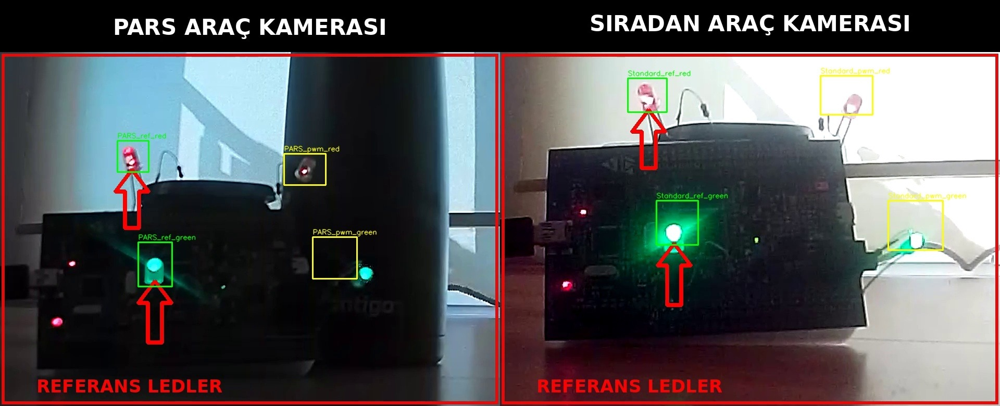
Pratik sonuç
Trafik ışıkları, fren lambaları, sinyaller, elektronik tabelalar ve düşük frekanslı PWM aydınlatmalar gibi otomotiv LED kaynaklarında PARS kamera daha iyi süreklilik ve tanınabilirlik sağlar.
25 Hz test50 Hz testYeşil LEDKırmızı LED
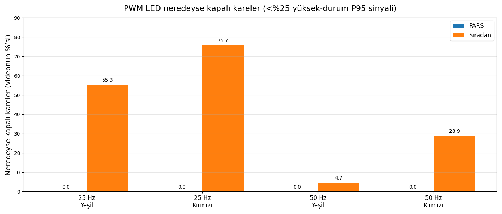
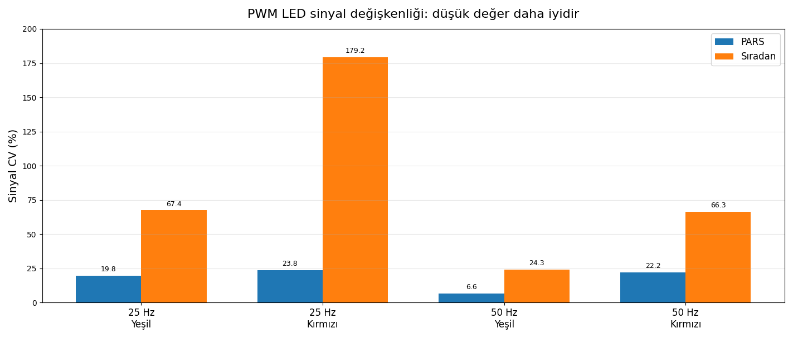
PWM LED temel LFM metrikleri
Neredeyse kapalı olarak sınıflandırılan PWM LED kareleri.
| PWM frekansı | PWM LED | PARS kapalı | Standart kapalı | PARS sönük | Standart sönük |
|---|---|---|---|---|---|
| 25 Hz | Yeşil | 0,0% | 55,3% | 3,6% | 63,4% |
| 25 Hz | Kırmızı | 0,0% | 75,7% | 4,7% | 82,8% |
| 50 Hz | Yeşil | 0,0% | 4,7% | 0,0% | 10,0% |
| 50 Hz | Kırmızı | 0,0% | 28,9% | 5,9% | 32,3% |
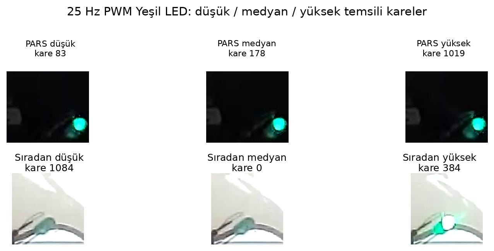
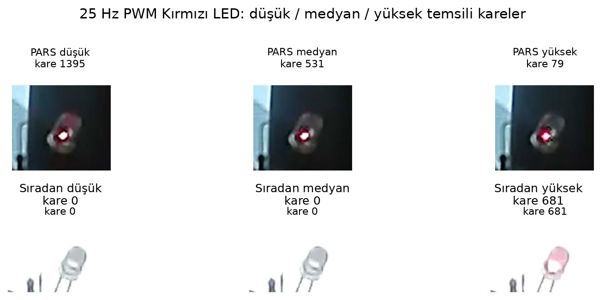
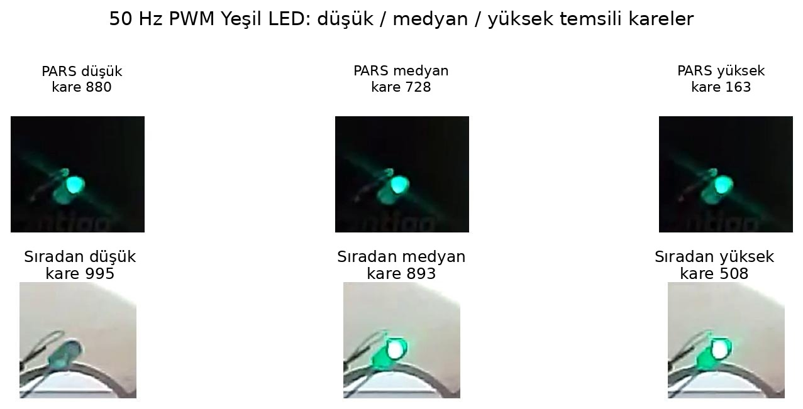
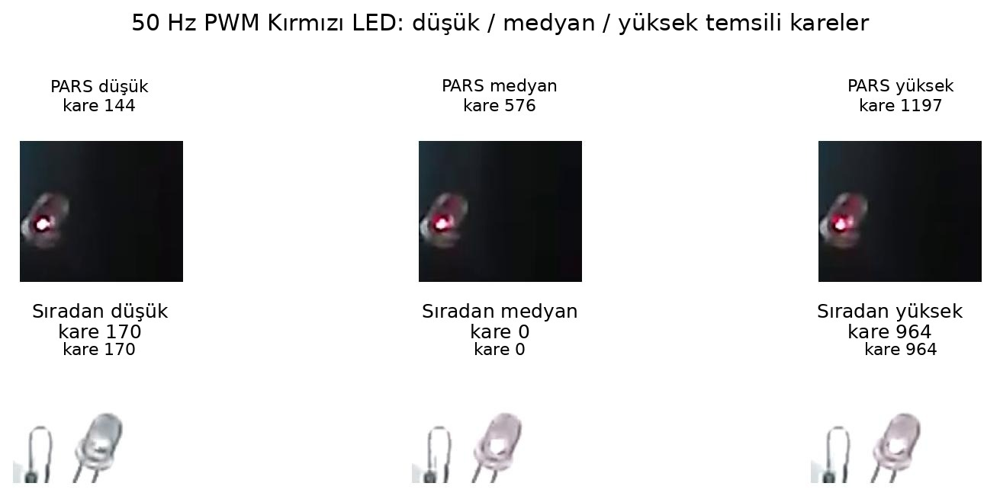
Video bağlantıları
Karşılaştırma videolarından örnek kareler
Aşağıdaki kartlarda ilgili YouTube bağlantılarına ait örnek kareler sayfaya yerel görsel olarak eklenmiştir. Kartlara tıklayarak videoları yeni sekmede açabilirsiniz.
WHDR videoları
LFM videoları
SOS ve servis erişimi
Acil durum ve USB Type-C servis kontrolü
SOS butonu etkinleştiğinde cihaz alarm moduna geçer; görüntüler güvenlik ve doğrulama amacıyla işaretlenir. USB Type-C veri/servis arayüzü ise fiziksel ve yazılımsal erişim kontrolleriyle sınırlandırılmıştır.
- Acil durum aktivasyon bilgisi kaydedilir.
- Konum ve anlık görüntüler güvenli numaralara veya Acil 112 sistemine iletilebilir.
- USB port varsayılan durumda kapalıdır; yetkili servis modu sonrası kullanılabilir.
USB Type-C erişim yapısı
- Arayüz
- USB Type-C veri/servis arayüzü
- Fiziksel erişim
- Tümleşik kablo demeti + cihaza özel servis kablosu/adaptörü
- Varsayılan durum
- Kapalı
- Kullanım amacı
- Veri aktarımı, kayıt/log erişimi, servis ve konfigürasyon
- Güvenlik
- Fiziksel sınırlama + yazılımsal erişim kontrolü
Sertifikalar
Araç ortamına uygun dayanım ve uyumluluk testleri
PARS M13, ILAC onaylı kuruluşlarca gerçekleştirilen test başlıklarından başarıyla geçecek şekilde konumlandırılmış profesyonel bir araç kamera çözümüdür.
Darbe Koruma Testleri
IP Testleri
EN-50155 Testi
E-Mark (R10)
R118 Kablo Yanmazlık
ISO-16750-3
Teknik tablo
PARS M13 teknik özellikler
Tablodaki arama alanı ile hızlıca özellik filtreleyebilirsiniz.
| Özellik | Açıklama |
|---|---|
| Çalışma Gerilimi | 12V DC nominal; 9–36 V çalışma aralığı |
| Nominal Akım | 200 mA maksimum |
| Çalışma Sıcaklığı | -40° ~ +80° |
| Çalışma Nemi | %95 RHG maksimum |
| Kamera Çözünürlüğü | 2 MP, tüm kanallar |
| Görüntü Kalitesi | 1080p |
| Dış Kamera Dinamik Aralığı | 120 dB |
| Dış Kamera LFM Özelliği | Mevcut |
| İç Kamera Global Shutter | Mevcut |
| Video Akış Protokolü | HLS |
| Video Sıkıştırma | H.264 / H.265 |
| Görüş Açısı | Minimum 110° yatay, 50° dikey |
| SD Kart | Kamera başına 512 GB |
| Ortam Sesi | Mevcut |
| Döngüsel Kayıt | Mevcut |
| Uzaktan Yazılım Güncelleme | Mevcut |
| Uzaktan Kayıt İzleme / İndirme | Mevcut |
| Güvenli, Şifreli ve Kesintisiz Kayıt | Mevcut |
| Kontak Modülü | Mevcut; kontak sonrası kayıt süresi parametrik |
| Konum Verisi | GPS & BeiDou; 10 saniye konum periyodu |
| Konum Hafızası | Bağlantı yokken en az 3000 konum bilgisi saklama |
| 4G/LTE Bağlantı | Video ve konum aktarımı |
| Acil Durum (SOS) Butonu | Mevcut |
| Alarm Özelliği | Mevcut; pre-alarm ve post-alarm etiketleme |
| USB Type-C | Veri/servis arayüzü; varsayılan kapalı, yetkili servis moduyla erişim |
| Sertifikalar | Darbe koruma, IP, EN-50155, E-Mark, R118, ISO-16750-3 |
| Boyutlar | 86 × 42 × 107 mm |
| Ağırlık | 320 g |
Vercel hazır
Profesyonel ürün tanıtım sayfası
Statik HTML, CSS ve JavaScript dosyalarıyla hızlı yayınlanabilir. Görseller yerel varlık olarak paketlenmiştir.